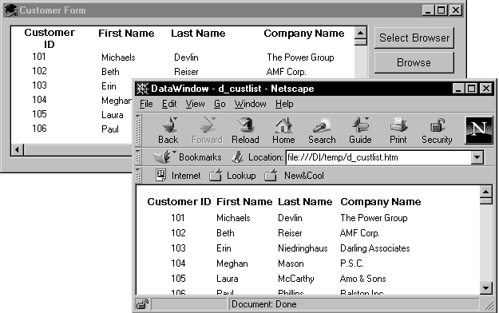
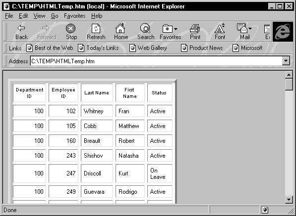
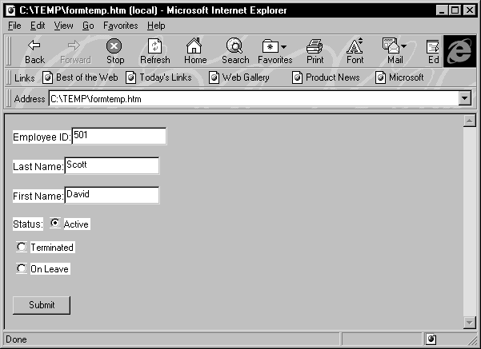

You can use the data in a DataWindow object to create HyperText Markup Language (HTML) syntax. Once the HTML has been created, you can display it in a Web browser.
 Web DataWindow not described here This section does not include description of the Web DataWindow.
The Web DataWindow uses DataWindow object properties that are described
in detail in the DataWindow Reference
. For
overview information, see the "Web DataWindow properties".
Web DataWindow not described here This section does not include description of the Web DataWindow.
The Web DataWindow uses DataWindow object properties that are described
in detail in the DataWindow Reference
. For
overview information, see the "Web DataWindow properties".
You can use any of several techniques to generate HTML from a DataWindow object.
In a painter In both the DataWindow painter and the Output view in the Database painter, you can save retrieved data in HTML format. To do this in the DataWindow painter, select File>Save Rows As from the menu. In the Database painter, open the Output view, then select Rows>Save Rows As from the menu. In both painters, specify HTML Table as the format for the file.
In your application code You can obtain an HTML string of the DataWindow presentation and data from the Data.HTMLTable property. You can save the string in a variable and modify the HTML with string manipulation operations. In PowerBuilder, you can also use the FileOpen and FileWrite functions to save the HTML to a file.
The HTMLTable property has its own properties which you can set to control the HTML attributes and style sheet associated with the Table HTML element.
PowerBuilder only In PowerBuilder, there are two more techniques available to you. You can:
Some DataWindow presentation styles translate better into HTML than others. The following presentation styles produce good results:
The Composite, Graph, RichText, and OLE 2.0 presentation styles produce HTML output that is based on the result only, and not on the presentation style. DataWindows that have overlapping controls might not produce the expected results. Nested reports are ignored; they are not included in the generated HTML.
This example illustrates how you might use DataWindow-generated HTML in an application.
The key line of code gets the HTML from the DataWindow by referring to its HTMLTable property. Variations for each environment are shown below. In PowerBuilder, you can use the Describe method or a property expression. The Web ActiveX has to use Describe.
PowerBuilder
ls_htmlstring = dw_1.Object.DataWindow.Data.HTMLTable
Web ActiveX
str_html = dw_1.Describe("DataWindow.Data.HTMLTable");
The complete example that follows is implemented in PowerBuilder.
The window below displays customer data in a tabular DataWindow object. By pressing the Browse button, the user can translate the contents of the DataWindow object into HTML format and invoke a Web browser to view the HTML output. By pressing the Select Browser button, the user can tell the application which Web browser to use:

Script for the Select Browser button The script for the Select Browser button displays a dialog box where the user can select an executable file for a Web browser. The path to the executable is stored in is_Browser, which is an instance variable defined on the window:
String ls_BrowserName
Integer li_Result
// Open the dialog to select a browser.
li_Result = GetFileOpenName("Select Browser", &is_Browser, ls_BrowserName, &
"exe", "Executable Files (*.EXE),*.EXE")
IF li_Result = -1 THEN
MessageBox("No Browser", "No Browser selected")END IF
Script for the Browse button The script for the Browse button creates an HTML string from the data in the DataWindow by assigning the Data.HTMLTable property to a string variable. After constructing the HTML string, the script adds a header to the HTML string. Then the script saves the HTML to a file and runs the Web browser to display the output.
String ls_HTML, ls_FileName, ls_BrowserPath
Integer li_FileNumber, li_Bytes,
Integer li_RunResult, li_Result
// Generate the HTML.
ls_HTML = dw_1.Object.DataWindow.Data.HTMLTable
IF IsNull(ls_HTML) Or Len(ls_HTML) <= 1 THEN
MessageBox ("Error", "Error generating HTML!")Return
ELSE
ls_HTML ="<H1>HTML Generated From a DataWindow"&
+ "</H1><P>" + ls_HTML
END IF
//Create the file.
ls_FileName = "custlist.htm"
li_FileNumber = FileOpen(ls_FileName, StreamMode!, &
Write!, LockReadWrite!, Replace! )
IF (li_FileNumber >= 0) THEN
li_Bytes = FileWrite(li_FileNumber, ls_HTML)
FileClose(li_FileNumber)
IF li_Bytes = Len(ls_HTML) THEN
// Run Browser with the HTML file.
IF Not FileExists(is_Browser) THEN
cb_selbrowser.Trigger Event Clicked()
IF NOT FileExists(is_Browser) THEN
MessageBox("Select Browser", "Could & not find the browser.")
RETURN
END IF
END IF
li_RunResult = Run(is_Browser + " file:///"+&
ls_FileName)
IF li_RunResult = -1 THEN
MessageBox("Error", "Error running browser!")END IF
ELSE
MessageBox ("Write Error", &"File Write Unsuccessful")
END IF
ELSE
MessageBox ("File Error", "Could not open file")END IF
You control table display and style sheet usage through the HTMLTable.GenerateCSS property. The HTMLTable.GenerateCSS property controls the downward compatibility of the HTML found in the HTMLTable property. If HTMLTable.GenerateCSS is FALSE, formatting (style sheet references) is not referenced in the HTMLTable property; if it is TRUE, the HTMLTable property includes elements that reference the cascading style sheet saved in HTML.StyleSheet.
This screen shows an HTML table in a browser using custom display features:

If the HTMLTable.GenerateCSS property is TRUE, the HTMLTable element in the HTMLTable property uses additional properties to customize table display. For example, suppose you specify the following properties:
HTMLTable.NoWrap=Yes
HTMLTable.Border=5
HTMLTable.Width=5
HTMLTable.CellPadding=2
HTMLTable.CellSpacing=2
 Describe, Modify, and dot notation You can access these properties by using the Modify and Describe
PowerScript methods or by using dot notation.
Describe, Modify, and dot notation You can access these properties by using the Modify and Describe
PowerScript methods or by using dot notation.
The HTML syntax in the HTMLTable property includes table formatting information and class references for use with the style sheet:
<table cellspacing=2 cellpadding=2 border=5 width=5>
<tr>
<td CLASS=0 ALIGN=center>Employee ID
<td CLASS=0 ALIGN=center>First Name
<td CLASS=0 ALIGN=center>Last Name
<tr>
<td CLASS=6 ALIGN=right>102
<td CLASS=7>Fran
<td CLASS=7>Whitney
</table>
If HTMLTable.GenerateCSS is FALSE, the DataWindow does not use HTMLTable properties to create the Table element. For example, if GenerateCSS is FALSE, the HTML syntax for the HTMLTable property might look like this:
<table>
<tr>
<th ALIGN=center>Employee ID
<th ALIGN=center>First Name
<th ALIGN=center>Last Name
<tr>
<td ALIGN=right>102
<td>Fran
<td>Whitney
</table>
The HTML syntax contained in the HTMLTable property is incomplete: it is not wrapped in <HTML></HTML> elements and does not contain the style sheet. You can write code in your application to build a string representing a complete HTML page.
PowerBuilder example This example sets DataWindow properties, creates an HTML string, and returns it to the browser:
String ls_html
ds_1.Modify &
("datawindow.HTMLTable.GenerateCSS='yes'") ds_1.Modify("datawindow.HTMLTable.NoWrap='yes'") ds_1.Modify("datawindow.HTMLTable.width=5") ds_1.Modify("datawindow.HTMLTable.border=5") ds_1.Modify("datawindow.HTMLTable.CellSpacing=2") ds_1.Modify("datawindow.HTMLTable.CellPadding=2")ls_html = "<HTML>"
ls_html += &
ds_1.Object.datawindow.HTMLTable.StyleSheet
ls_html += "<BODY>"
ls_html += "<H1>DataWindow with StyleSheet</H1>"
ls_html += ds_1.Object.DataWindow.data.HTMLTable
ls_html += "</BODY>"
ls_html += "</HTML>"
return ls_html
This technique provides control over HTML page content. Use this technique as an alternative to calling the SaveAs method with the HTMLTable! Enumeration.
 Availability The SaveAs method is not available for the Web control for
ActiveX.
Availability The SaveAs method is not available for the Web control for
ActiveX.
As an alternative to creating HTML pages dynamically, you can call the SaveAs method with the HTMLTable! Enumeration:
ds_1.SaveAs &
("C:\TEMP\HTMLTemp.htm", HTMLTable!, TRUE)
This creates an HTML file with the proper elements, including the style sheet:
<STYLE TYPE="text/css">
<!--
.2 {COLOR:#000000;BACKGROUND:#ffffff;FONT-STYLE:normal;FONT-WEIGHT:normal;FONT:9pt "Arial", sans-serif;TEXT-DECORATION:none} .3{COLOR:#000000;BACKGROUND:#ffffff;FONT-STYLE:normal;FONT-WEIGHT:normal;FONT:8pt "MS Sans Serif", sans-serif;TEXT-DECORATION:none} .3{COLOR:#000000;BACKGROUND:#ffffff;FONT-STYLE:normal;FONT-WEIGHT:normal;FONT:8pt "MS Sans Serif", sans-serif;TEXT-DECORATION:none}-->
</STYLE>
<TABLE nowrap cellspacing=2 cellpadding=2 border=5 width=5>
<tr>
<td CLASS=2 ALIGN=right>Employee ID:
<td CLASS=3 ALIGN=right>501
<tr>
<td CLASS=2 ALIGN=right>Last Name:
<td CLASS=3>Scott
<tr>
<td CLASS=2 ALIGN=right>First Name:
<td CLASS=3>David
<tr>
<td CLASS=2 ALIGN=right>Status:
<td CLASS=3>Active
</TABLE>
The GenerateHTMLForm method creates HTML form syntax for DataWindow objects. You can create an HTML form that displays a specified number of columns for a specified number of rows. Note the following:
Although the GenerateHTMLForm method generates syntax for all presentation styles, the only styles that create usable forms are Freeform and Tabular.
The following HTML page shows a freeform DataWindow object converted into a form using syntax generated by the GenerateHTMLForm method:

The GenerateHTMLForm method converts column edit styles into the appropriate HTML elements:
To generate HTML form syntax, you call the GenerateHTMLForm method:
instancename.GenerateHTMLForm ( syntax, style, action { , startrow, endrow, startcolumn, endcolumn { , buffer } } )
The method places the Form element syntax into the syntax argument and the HTML style sheet into the style argument, both of which are passed by reference.
 Static texts in freeform DataWindow objects All static texts in the detail band are passed through to
the generated HTML form syntax. If you limit the number of columns
to be converted using the startcolumn and endcolumn arguments,
remove the headers from the detail band for the columns you eliminate.
Static texts in freeform DataWindow objects All static texts in the detail band are passed through to
the generated HTML form syntax. If you limit the number of columns
to be converted using the startcolumn and endcolumn arguments,
remove the headers from the detail band for the columns you eliminate.
Here is an example of the GenerateHTMLForm method:
String ls_syntax, ls_style, ls_action
String ls_html
Integer li_return
ls_action = &
"/cgi-bin/pbcgi60.exe/myapp/uo_webtest/f_emplist"
li_return = ds_1.GenerateHTMLForm &
(ls_syntax, ls_style, ls_action)
IF li_return = -1 THEN
MessageBox("HTML", "GenerateHTMLForm failed")ELSE
// of_MakeHTMLPage is an object method,
// described in the next section.
ls_html = this.of_MakeHTMLPage &
(ls_syntax, ls_style)
END IF
After calling the GenerateHTMLForm method, the ls_syntax variable contains a Form element. Here is an example:
<FORM ACTION=
"/cgi-bin/pbcgi60.exe/myapp/uo_webtest/f_emplist"
METHOD=POST>
<P>
<P><FONT CLASS=2>Employee ID:</FONT>
<INPUT TYPE=TEXT NAME="emp_id_1" VALUE="501">
<P><FONT CLASS=2>Last Name:</FONT>
<INPUT TYPE=TEXT NAME="emp_lname_1" MAXLENGTH=20 VALUE="Scott">
<P><FONT CLASS=2>First Name:</FONT>
<INPUT TYPE=TEXT NAME="emp_fname_1" MAXLENGTH=20 VALUE="David">
<P><FONT CLASS=2>Status:</FONT>
<INPUT TYPE="RADIO" NAME="status_1" CHECKED CLASS=5 ><FONT CLASS=5 >Active
<P>
<INPUT TYPE="RADIO" NAME="status_1" CLASS=5 >
<FONT CLASS=5 >Terminated
<P>
<INPUT TYPE="RADIO" NAME="status_1" CLASS=5 >
<FONT CLASS=5 >On Leave
<P>
<P>
<BR>
<INPUT TYPE=SUBMIT NAME=SAMPLE VALUE="OK">
</FORM>
The ls_stylesheet variable from the previous example contains a Style element, an example of which is shown below:
<STYLE TYPE="text/css">
<!--
.2{COLOR:#000000;BACKGROUND:#ffffff;FONT-STYLE:normal;FONT-WEIGHT:normal;FONT:9pt "Arial", sans-serif;TEXT-DECORATION:none} .3{COLOR:#000000;BACKGROUND:#ffffff;FONT-STYLE:normal;FONT-WEIGHT:normal;FONT:8pt "MS Sans Serif", sans-serif;TEXT-DECORATION:none} .5{COLOR:#000000;BACKGROUND:#ffffff;FONT-STYLE:normal;FONT-WEIGHT:normal;FONT:8pt "MS Sans Serif", sans-serif;TEXT-DECORATION:none}-->
</STYLE>
 Unique element names The GenerateHTMLForm method creates unique names for all elements
in the form (even when displaying multiple rows in one form) by
adding a _nextsequentialnumber suffix.
Unique element names The GenerateHTMLForm method creates unique names for all elements
in the form (even when displaying multiple rows in one form) by
adding a _nextsequentialnumber suffix.
To use the syntax and style sheet returned by the GenerateHTMLForm method, you must write code to merge them into an HTML page. A complete HTML page requires <HTML> and <BODY> elements to contain the style sheet and syntax.
One way to do this is to create a global or object function that returns a complete HTML page, taking as arguments the Form and Style elements generated by the GenerateHTMLForm method. Such a function might contain the following code:
// Function Name: of_MakeHTMLPage
// Arguments: String as_syntax, String as_style
// Returns: String
//***********************************
String ls_html
IF as_syntax = "" THEN
RETURN ""
END IF
IF as_style = "" THEN
RETURN ""
END IF
ls_html = "<HTML>"
ls_html += as_style
ls_html += "<BODY>"
ls_html += "<H1>Employee Information</H1>"
ls_html += as_syntax
ls_html += "</BODY></HTML>"
RETURN ls_html